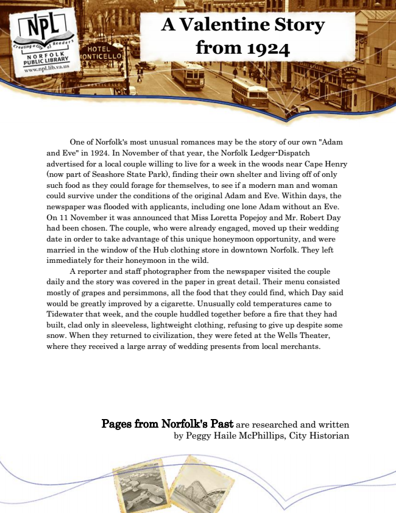

A Valentine Story from 1924
One of Norfolk's most unusual romances may be the story of our own "Adam and Eve" in 1924. In November of that year, the Norfolk Ledger-Dispatch advertised for a local couple willing to live for a week in the woods near Cape Henry (now part of Seashore State Park), finding their own shelter and living off of only such food as they could forage for themselves, to see if a modern man and woman could survive under the conditions of the original Adam and Eve. Within days, the newspaper was flooded with applicants, including one lone Adam without an Eve. On 11 November it was announced that Miss Loretta Popejoy and Mr. Robert Day had been chosen. The couple, who were already engaged, moved up their wedding date in order to take advantage of this unique honeymoon opportunity, and were married in the window of the Hub clothing store in downtown Norfolk. They left immediately for their honeymoon in the wild.
A reporter and staff photographer from the newspaper visited the couple daily and the story was covered in the paper in great detail. Their menu consisted mostly of grapes and persimmons, all the food that they could find, which Day said would be greatly improved by a cigarette. Unusually cold temperatures came to Tidewater that week, and the couple huddled together before a fire that they had built, clad only in sleeveless, lightweight clothing, refusing to give up despite some snow. When they returned to civilization, they were feted at the Wells Theater, where they received a large array of wedding presents from local merchants.
Pages from Norfolk's Past are researched and written by Peggy Haile McPhillips, City Historian